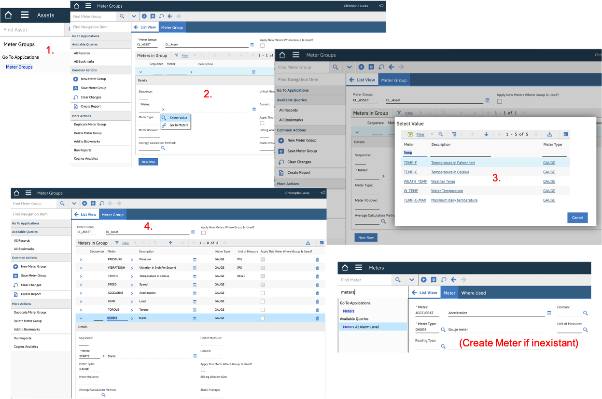
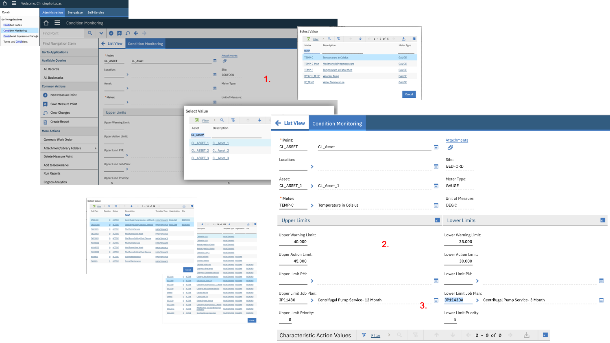
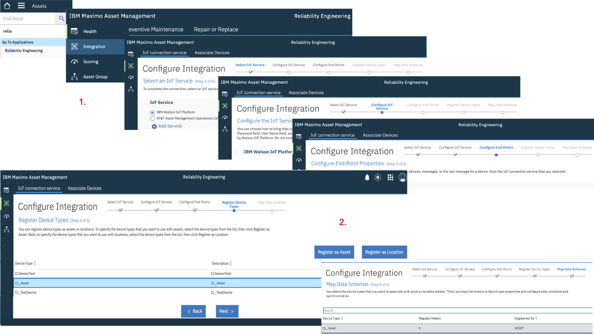

HEALTH Lab
0. Objectives
In this Module you will: * bhcdcdcdcd
1. Setup Assets, Meters & Condition Monitoring in Maximo
1. Create 3 Assets & 1 Query in Maximo
- In Maximo, click the
Go To Applications - AssetMenu. Click the + button to create an Asset, enterCL_Asset_1in both the Asset ID & Description fields. ClickSave. Repeat this step forCL_Asset_2andCL_Asset_3. - Click the
List Viewmenu. In the Asset field, enterCL_Asset*, click enter. This should return the list of your 3 just-created CL_Assets. Click theSave Querybutton, enterCL_Assetsin in both the Query Name & Description. Tick thePublicbox.
2. Create a Meter Group
In this section, we will create a maximo Meter Group containing 8 Meters that we will later associate to the IoT readings that we defined in the first section of the MONITOR lab.
- In Maximo to-left
Find Navigation Itembox, enter theMeter Groupsapplication. - Click the + button to create a Meter Group, enter
CL_Assetin both the Meter Group & Description fields. - Click
New Rowand in the Meter field, clickSelect Value. In the Select Value window that opens, enterTempin the Meter field, hit Enter, selectTEMP-C. - Repeat previous step with the following Meters:
VIBRATIONH,PRESSURE,SPEED,ACCELERAT,LOAD,TORQUE,STARTS. Click theSavebutton.
Note that, although Meters like PRESSURE often exist in Maximo installations out-of-the-box,
some of the Meters appearing in step 4. might not exist in Maximo yet. In which case, do the following:
(a) Go to the Meters menu via Find Navigation Item, (b) click Create new Meter, enter e.g. ACCELERAT (the maximum name length is 9 ),
select GAUGE as Meter Type, then Save. That newly created Meter can now be added to the Meter Group in step 4.

3. Associate Meter Group to Assets & create Meter Readings
- In Maximo, click the
Go To Applications - AssetMenu. In the Asset field, enterCL_Asset*, click enter. This will return the list of you 3 CL_Assets, clickCL_Asset_1. - Go to On CL_Asset_1, go to its Meters tab, click
Meter Group - Select Value. In the Select Value window,CL_Asset*, click enter, select theCL_AssetMeter Group. ClickSave. This has loaded all the Meters we defined in the Meter Group. - In left Find Navigation item box, enter
Enter M, clickEnter Meter Readings. For each Meter, enter values within the ranges that we defined for the IoT readings at the beginning of the Monitor lab in 2. Create IoT Simulation. For example:TEMP-C=37,VIBRATIONH=4,PRESSURE=22,SPEED=17,ACCELERAT=9,LOAD=100,TORQUE=12,STARTS=1. ClickOK. - Repeat steps 1. to 3. for
CL_Asset_2andCL_Asset_3with whatever Meter values you want.
4. Create a Condition Monitoring Rule
We are now going to create a Condition Monitoring rule. The ultimate idea here is that we will create upper and lower limits for the Meter Readings which, when passed, can automatically trigger work orders. Because we will later tie our original IoT readings from the Watson IoT Platform to Meter readings in Maximo, this will literally allow us to move towards a real Condition Based maintenance regime !
In this exercise, we will create such a rule for just 1 Asset (CL_Asset_1) and 1 reading (TEMP-C), but you can of course create more rules for other Assets and/or other readings.
-
In Maximo, click the
Go To Applications - Condition MonitoringMenu. Click the+to create a new Condition Monitoring. Name itCL_Asset. In the Point and Description fields, enterCL_Asset*. Next to the Asset field, clickSelect Value, search forCL_Asset_1, select it. Next to the Meter field, clickSelect Value, search forTEMP-C, select it. -
In the Upper Warning Limit field, enter
40, in the Lower Warning Limit field, enter35. In the Upper Action Limit field, enter45, in the Lower Action Limit field, enter30. Note that those values roughly correspond to the"temperature": random(35,40),values we originally defined in our IoT Simulation. With those limits defined, Condition Monitoring should pick-up those anomalous"temperature": random(46,48),we generated ! -
In the Upper Limit Job Pan field, click
Select Valueand select whatever existing Job Plan you want (we're just doing a demo here !). Do the same for Upper Limit Job Pan. ClickSave. Your final screen should look like picture below. 
2. Map IoT Devices & Readings to Maximo Assets & Meters
1. Register IoT Device Type as an Asset
[As earlier mentioned, this step assumes that the integration between the Watson IoT Platform and Maximo Reliability Engineer work centre exists. If not, here are the Integration Setup Instructions ].
-
In the left Find Navigation item box, enter
Rel, clickReliability Engineer. This will open the Reliability Engineer work centre. In the left menu, clickIntegration. ClickNext3 times through theSelect IoT ServicethenConfigure IoT ServicethenConfigure End PointsthenRegister Device Types. -
On the Register Device Types page, select
CL_Asset, clickRegister as AssetthenNext. This will take you to theMap Data Schemapage. 
2. Map IoT Readings to Maximo Meters
- On the first Schema tab of the Map Data Schema page, tick
Detect from a connected deviceandFrom first availablethen clickGet now. If your IoT Simulation is still running, this will return a .json string similar to this:{"acceleration":10,"load":99,"temperature":39,"torque":14,"pressure":22,"vibration":2,"starts":86,"speed":19}. If that string is not returned (because e.g. your IoT Simulation is not running at this time), you can manually enter this value in the field. ClickSavethen switch to theDevice Type Mappings tab. - Click
Add Mapping, thenSelect Meter. Find and selectTEMP-C- that's the Maximo Meter. On theIoT Device Type Property, selecttemperature- that's the IoT Reading. In theData Collectionsection, tickAggregatedwithValue=AVGandTime Period=Hour. This means that once every hour, a Meter reading will be created with a value equal to the average of your IoT Readings for the past hour. - Repeat steps 2. to 3. for the other readings, i.e.
VIBRATIONH,PRESSURE,SPEED,ACCELERAT,LOAD,TORQUE. ForSTARTS, selectCOUNTinstead ofAVG.
3. Associate IoT Devices to Maximo Assets
- Move to the
Associate Devicestop-menu. On the firstAssociate Assetstab, filter onCL_Asset. This will display 1 row for each Asset and Meter, i.e. 8 rows per Asset. On allCL_Asset_1rows, click theDevice Typecolumn, selectCL_Asset, then on the next column, selectCL_Asset_1. - Repeat step 1. for all other rows corresponding to
CL_Asset_2andCL_Asset_3. Do not forget to clickSave. - Once that is done, those 24 rows will have moved to the
Manage Assets.
3. Create Scoring Method and Dashboard
1. Create required Scoring Factors
Note that in most Maximo installations, some of the Meters like e.g. TEMP-C might already be defined as Scoring Factors.
However, the Meters that we defined in 2. Create a Meter Group do not exist as Scoring Factors
yet and we will define them in this. We will just use the sample of the Torque Meter here.
- Go to the left
Scoringmenu. Click on theScoring Factors. Check which ones of the 8 Meters we defined already exist here. For each one which does not exist, clickCreate Factor. - In the page that opens, click
Select Meter, and search for e.g.Torqueand click. - Enter
Torquein Factor Name. In theHigh Threshold, enter15, and in theLow Threshold, enter10. These threshold values are close to the range of the readings we defined for the associated IoT Reading in our initial IoT Simulation. Tick theUse Condition Monitoring ?box and clickSave. Repeat this steps for all other Meters which do exist as a Scoring Factor yet.
2. Create Scoring Method
In the Health part of APM, we want to provide reliability engineers and maintenance professionals with a near real-time visibility
of the health of their Assets.
The health of an Asset is defined by a configurable Health Score.
In this exercise, we will define a Scoring Method for the 3 CL_Assets we created.
A Scoring Method is defined by a 100% mix of 1 or n Drivers, each Driver being made of 1 or n Scoring Factors, each
Scoring Factor corresponding to a Meter Reading value, and each Driver having a Weight expressed in %.
- Click the
Scoring Methodstab and click the top-rightCreate Method. Tick theMultiple Driversbox andNext. - In the Method ID and Description fields, write
CL_Asset, clickNext. - In the Select Query field, search and click our earlier created
CL_Assetquery - you will see our 3 CL_Assets appear, clickNext. - In the
Best Scoreenter100, in theWorst Scoreenter0. ClickSave.
Let's now build this CL_Asset Scoring Method:
- cd